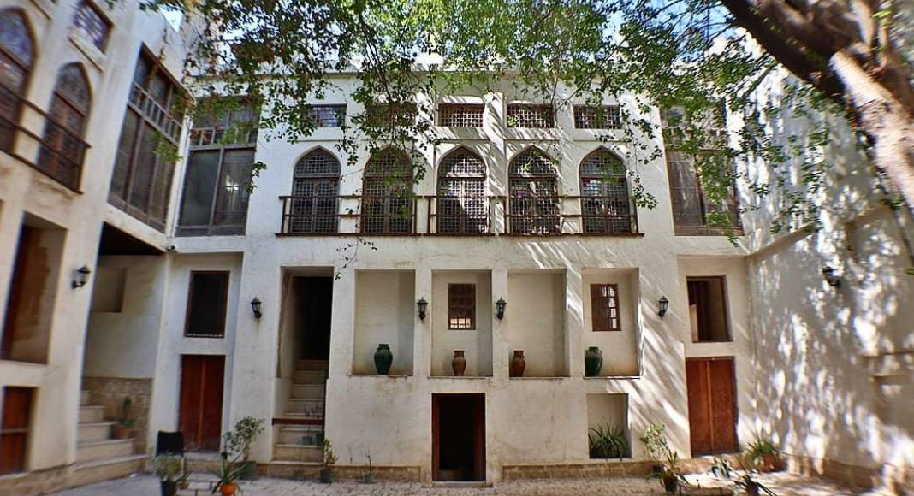
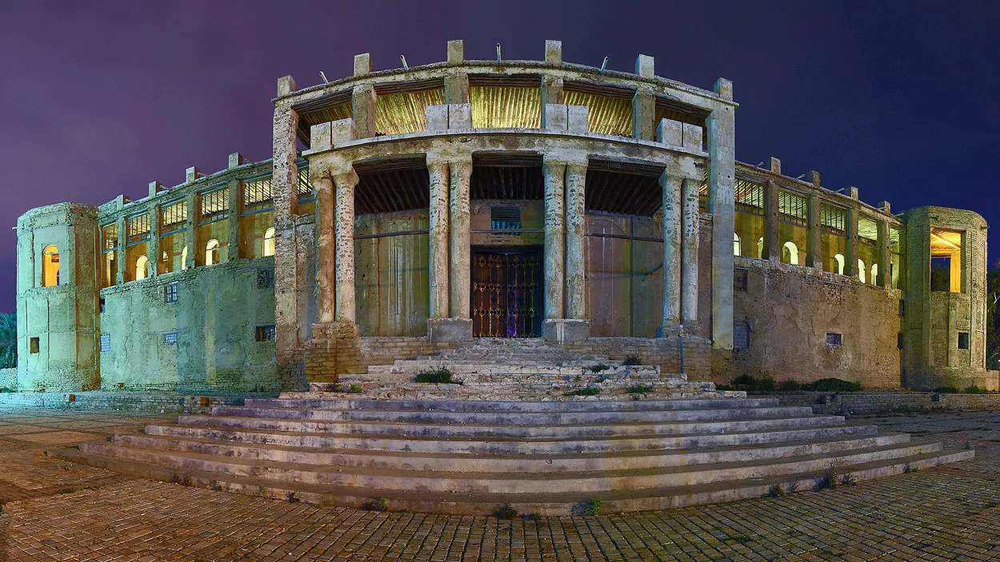
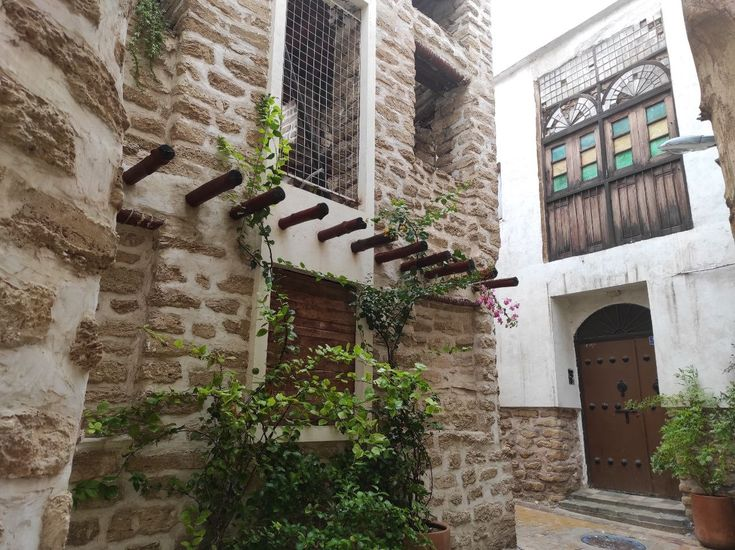
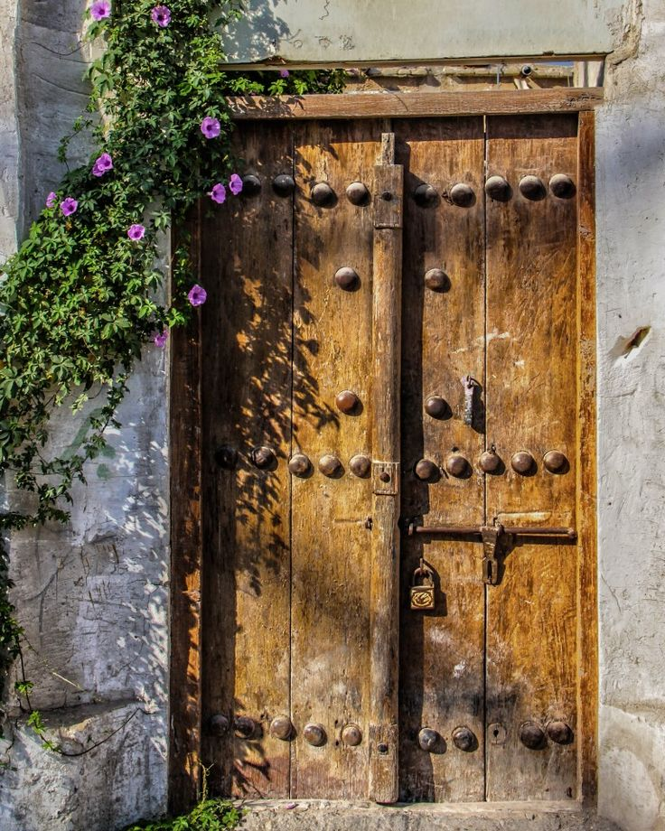

تصاویر بافت قدیم




ماشین زمان به تاریخ بوشهر

شکلگیری بافت قدیم بوشهر عمدتاً به دورههای صفویه و قاجار بازمیگردد؛ زمانی که این شهر به یکی از مهمترین بنادر تجاری ایران در خلیج فارس تبدیل شد. گسترش روابط بازرگانی دریایی و حضور بازرگانان داخلی و خارجی، موجب توسعهٔ محلههای مسکونی و ساخت عمارتهای شاخص شد. این بافت تاریخی طی قرنها، مرکز اصلی فعالیتهای اقتصادی، اجتماعی و فرهنگی بوشهر بوده و امروزه بهعنوان میراثی ارزشمند از گذشتهٔ این شهر شناخته میشود.
مارت ملک یکی از شاخصترین بناهای تاریخی شهر بوشهر است که قدمت آن به دورهٔ قاجار بازمیگردد.
عمارت دهدشتی از جمله خانههای تاریخی ارزشمند بوشهر است که امروزه به موزهٔ تاریخ پزشکی خلیج فارس تبدیل شده است.
عمارت گلشن یکی دیگر از بناهای تاریخی مهم بوشهر است که در نزدیکی ساحل قرار دارد و در گذشته محل اقامت بازرگانان و شخصیتهای برجسته بوده است.
عمارت کازرونی یکی از بناهای تاریخی شاخص شهر بوشهر است که قدمت آن به دورهٔ قاجار بازمیگردد.


